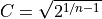

pyCGM_Single.Pipelines.butterFilter¶
-
pyCGM_Single.Pipelines.butterFilter(data, cutoff, Fs)¶ Applies a fourth order Butterworth filter.
Fourth order Butterworth filter to be used in filt() and filter_mask_nans() functions, which are in Utilities. Filter is applied forward and backwards with the filtfilt() function – see Notes for more details.
- Parameters
- data1darray or list
Data to be filtered.
- cutoffint
Desired cutoff frequency.
- Fsint
Sampling frequency signal was acquired at.
- Returns
- 1darray
1D numpy array of the signal after applying the filter.
Notes
Applying the filter one way will create a phase shift of the output signal compared to the input signal. For a 2nd order filter, this will be 90 degrees. Thus, filtfilt applies the signal once forward and once backward, which is referred to as phase correction. Whilst this brings the net phase shift to zero, it also means the cutoff of the filter will be twice as sharp when compared to a single filtering. In effect, a 2nd order filter applied twice will be a 4th order filter. We can apply a correction factor to the cutoff frequency to compensate. Correction factor  where n is equal to the number of passes.
Examples
First, we create a sin wave and add noise to it.
>>> from numpy import arange, around, pi, random, shape, sin >>> Fs = 360.0 >>> t = 1 >>> x = arange(0,t,1/Fs) >>> f = 10 >>> y = sin(2*pi*f*x) >>> around(y, 8) array([ 0. , 0.17364818, 0.34202014, 0.5 , 0.64278761, 0.76604444, 0.8660254 , 0.93969262, 0.98480775, 1. , 0.98480775, 0.93969262, 0.8660254 , 0.76604444, 0.64278761, 0.5 , 0.34202014, 0.17364818, 0. , -0.17364818, -0.34202014, -0.5 , -0.64278761, -0.76604444, -0.8660254 , -0.93969262, -0.98480775, -1. , -0.98480775, -0.93969262, -0.8660254 , -0.76604444, -0.64278761, -0.5 , -0.34202014, -0.17364818, -0. ,...
Add noise.
>>> noise = random.normal(0, 0.1, shape(y)) >>> y += noise >>> around(y, 8) array([ 0.07311482, 0.10988896, 0.25388809, 0.34281796, 0.63076505, 0.80085072, 0.80731281, 1.00976795, 0.98101546, 1.09391764, 0.94797884, 0.86082217, 0.74357311, 0.77169265, 0.62679276, 0.58882546, 0.09397977, 0.17420432, 0.05079215, -0.16508813, -0.30257866, -0.59281001, -0.73830443, -0.75690063, -0.69030496, -0.90486956, -0.93386976, -0.77240548, -0.95216637, -0.89735706, -0.9181403 , -0.83423091, -0.53978573, -0.51704481, -0.32342007, -0.09202642, 0.18458246,...
Filter the signal.
>>> filtered = butterFilter(y, 10, Fs) >>> filtered array([ 0.08064958, 0.2200619 , 0.3571366 , 0.48750588, 0.6068546 , 0.71108837, 0.79649951, 0.85992252, 0.89887073, 0.91164625, 0.89741714, 0.85625827, 0.78915455, 0.69796821, 0.58537283, 0.45475822, 0.31011048, 0.15587271, -0.00320784, -0.1622398 , -0.31634916, -0.46083652, -0.59132481, -0.70389233, -0.79518671, -0.86251753, -0.90392645, -0.91823542, -0.9050733 , -0.86488133, -0.79889735, -0.7091183 , -0.59824082, -0.46958083, -0.32697445, -0.17466424, -0.01717538,...